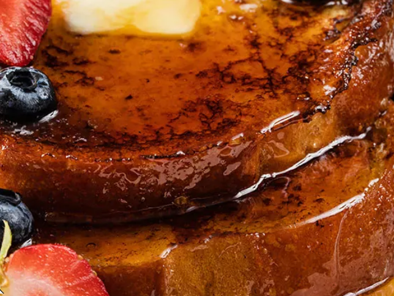

Home
French Toast

A sweet and easy to eat breakfast, lunch, or late-night snack
People of all ages love this thing, it's the french toast.
Sweet, crunchy and very easy to make. It's no wonder so many
people love french toast.
Ingredients:
- 1 egg
- 1 teaspoon vanilla extract
- 1/2 teaspoon ground cinnamon
- 1/4 cup of milk
- 4 slices of bread
Instructions:
- Beat egg, vanilla, and cinnamon in a bowl with wire whisk.
- Stir in milk.
- Dip bread in egg-mixture, turning to coat both sides evenly
- Cook bread slices on lightly greased nonstick pan on medium heat
until browned on both sides.
- Serve with syrup on top (If you like)
- That's it, enjoy!